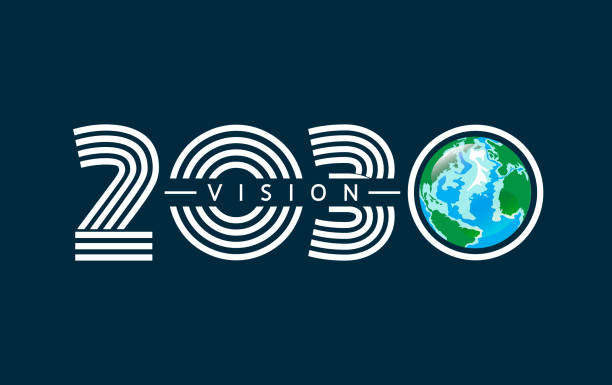
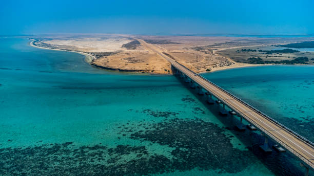
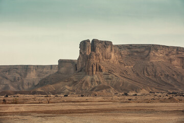
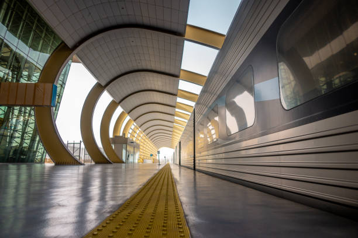
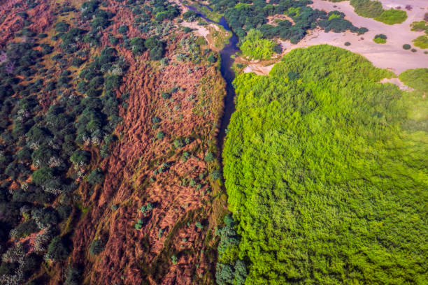

Saudi Arabia is experiencing a remarkable transformation, marked by ambitious projects and significant achievements that aim to diversify its economy and enhance the quality of life for its citizens. These major projects, driven by Vision 2030, reflect the kingdom's commitment to sustainable development and innovation.

The Red Sea Project is a luxury tourism development along the Saudi coastline, aimed at establishing the region as a premier tourist destination. This ambitious initiative focuses on creating a unique blend of natural beauty, cultural experiences, and high-end hospitality.
The Red Sea Project is expected to significantly enhance the tourism sector in Saudi Arabia by attracting international visitors and investment. Key impacts include:

The Qiddiya Project is set to become a major destination for entertainment, sports, and the arts, aiming to meet the needs of local residents and international visitors.
The Qiddiya Project is expected to enhance Saudi Arabia's status as a global entertainment hub. Key impacts include:

The Riyadh Metro is an important infrastructure project aimed at improving public transportation in Riyadh.
The Riyadh Metro is expected to significantly improve urban mobility and quality of life in the city. Key impacts include:

The Saudi Green Initiative is an ambitious plan to enhance the environment through sustainable practices.
The Saudi Green Initiative is expected to significantly contribute to environmental sustainability. Key impacts include: